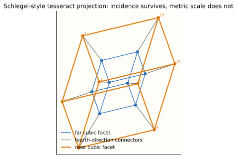

Source Span
Printed pages 396-412; PDF pages 414-430.
Core Method
Replace direct visual access with controlled representations and invariant checks.
Visual Anchor
The tesseract shadow keeps incidence visible while changing projected edge lengths.
